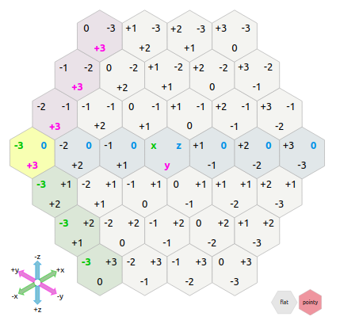

AoC2020 Days 19 to 24
2020-12-24
Today was the penultimate day of the Advent of Code 2020. As the difficulty increased significantly in the last week I ended up spending a larger amount of time solving the puzzles, thus leaving me less time to talk about them here.
First of all: I am very happy with myself as I managed so far to solve every puzzle, thus beating my record from last year. Only one sub-puzzle took me more than a day to solve (and it turned out it was because of a silly mistake, as i actually had the correct algorithm on the first day).
To recap quickly (click on the numbers to jump to the adequate section):
- Day 19 was a regular expression eldritch nightmare (including recursion).
- Day 20 was in my opinion this year's toughest challenge (so far) consisting on solving a jigsaw puzzle where pieces can be flipped and rotated in any direction, and when solved finding how many times a pattern arised in the resulting picture.
- Day 21 was fairly easy and reminiscent of the puzzle from day 16 (in fact I recycled part of my code).
- Day 22 was a game of "Bataille" where recursive subgames were needed to solved situation in which the card values are lower than the number of cards in the stack.
- Day 23 was another toughie where the naive solution (i.e. the one I used for part 1) would run for weeks to solve part 2.
- Day 24 finally was an hexagonal game of life! Very fun.
In day 19 challenge we add a series of self-referencing rules like rule 0 is 1 2, rule 1 is 2 | 3, rule 2 "a" and rule 3 "b", which means rule 1 is actually "a" or "b" and rule 0 "aa" or "ba". Check the original website for a better and more complete explanation. The easy way to solve it was to recursively replace the "rules" by their regex version. But in part 2, two of the rules were self-referecing e. g. rule 8 is 11 | 8 11 for instance. I ended up doing the lazy variation to arbitrarily set a maximum recursion level and just write it by hand, something like:
(42 | 42 (42 | 42 (42 | 42 (42 | 42 (42 | 42 (42 | 42 (42 | 42 (42 | 42 (42 | 42 (42 | 42 (42 | 42 (42)*)*)*)*)*)*)*)*)*)*)*)But I did dscover that there is indeed a possibility of recursion in perl-style regex: (?R) or (?n) where n is the parentheses level or the recursive section. Here it was too tough to implement though is the recursive part of a small section in a 1000+ character regex.
Day 20 was super tough. It took me an extra day to figure out because after 6h of working at it it still didn t return the correct value so I gave up, and the next day when I came back at it, I just printed the in-between steps and saw where it failed: I just flipped to expression around. Once resolved it went smoothly and I found the correct solution. Here, first, the part where we solve the jigsaw puzzle (each tile has a border in common with another one, we merge them and then get rid of their border):
options(digits=22)
input <- readLines("input20.txt")
tiles <- list()
n <- 1
for(i in 1:144){
tiles[[i]] <- list()
tiles[[i]]$tile <- do.call(rbind,strsplit(input[n+1:10],""))
tiles[[i]]$nb <- as.integer(gsub("^Tile ([0-9]+):$","\\1",input[n]))
n <- n+12
}
sides <- lapply(tiles,function(x)c(paste(x$tile[1,],collapse=""),
paste(x$tile[,10],collapse=""),
paste(x$tile[10,],collapse=""),
paste(x$tile[,1],collapse="")))
for(i in 1:144){
# Super messy but basically for each tile create a list with the tile pattern, its ID,
# its borders as character strings, and a matrix of matching tiles
# (with tile ID, which side of current tile match and which side of target tile match)
tiles[[i]]$sides <- sides[[i]]
tiles[[i]]$matching_sides <- shttps://raw.githubusercontent.com/plannapus/Advent_of_Code/master/2020/visualisations/map20.pngapply(sides[[i]],function(x)x%in%unlist(sides[-i])|intToUtf8(rev(utf8ToInt(x)))%in%unlist(sides[-i]))
tiles[[i]]$n_matching <- sum(sapply(sides[[i]],function(x)x%in%unlist(sides[-i])|intToUtf8(rev(utf8ToInt(x)))%in%unlist(sides[-i])))
y <- sides[[i]]
mat <- lapply(tiles[-i],function(X){
m <-sapply(X$sides,function(x)x==y|intToUtf8(rev(utf8ToInt(x)))==y)
if(any(m)){
return(cbind(X$nb,which(m,arr.ind=T)))
}else{return(NULL)}
})
tiles[[i]]$matched <- do.call(rbind,mat)
}
reorient <- function(tile,side,previous,from="left"){
# The most important part of the code: rotate and flip the tile to fit in the jigsaw
if(from=="left"){
w <- which(c(tile$side[side]==previous$side[2],intToUtf8(rev(utf8ToInt(tile$side[side])))==previous$side[2]))
if(side==4){
if(w!=1){
tile$tile <- tile$tile[10:1,]
}
}
if(side==2){
if(w==1){
tile$tile <- tile$tile[,10:1]
}else{
tile$tile <- tile$tile[10:1,10:1]
}
}
if(side==1){
if(w==1){
tile$tile <- t(tile$tile)
}else{
tile$tile <- t(tile$tile)[10:1,]
}
}
if(side==3){
if(w==1){
tile$tile <- t(tile$tile)[,10:1]
}else{
tile$tile <- t(tile$tile)[10:1,10:1]
}
}
}
if(from=="top"){
w <- which(c(tile$side[side]==previous$side[3],intToUtf8(rev(utf8ToInt(tile$side[side])))==previous$side[3]))
if(side==1){
if(w!=1){
tile$tile <- tile$tile[,10:1]
}
}
if(side==2){
if(w==1){
tile$tile <- t(tile$tile)[10:1,]
}else{
tile$tile <- t(tile$tile)[10:1,10:1]
}
}
if(side==3){
if(w==1){
tile$tile <- tile$tile[10:1,]
}else{
tile$tile <- tile$tile[10:1,10:1]
}
}
if(side==4){
if(w==1){
tile$tile <- t(tile$tile)
}else{
tile$tile <- t(tile$tile)[,10:1]
}
}
}
# Recompute sides and matching tiles:
tile$sides <- c(paste(tile$tile[1,],collapse=""),
paste(tile$tile[,10],collapse=""),
paste(tile$tile[10,],collapse=""),
paste(tile$tile[,1],collapse=""))
mat <- lapply(tiles,function(X){
m<-sapply(X$sides,function(x)x==tile$sides|intToUtf8(rev(utf8ToInt(x)))==tile$sides)
if(any(m)){
return(cbind(X$nb,which(m,arr.ind=T)))
}else{return(NULL)}
})
mat <- do.call(rbind,mat)
tile$matched <- mat[mat[,1]!=tile$nb,]
tile
}
map <- matrix(nrow=8*12,ncol=8*12)
nbs <- sapply(tiles,function(x)x$nb)
used <- matrix(nr=12,nc=12)
modtiles <- tiles
for(j in 1:12){
if(j==1){ #First tile is a corner tile (only has 2 matching sides)
ind <- tiles[which(n_matching_sides==2)][[1]]$nb
first_tile <- tiles[nbs==ind][[1]]
first_tile$tile <- first_tile$tile[10:1,10:1]
first_tile$sides <- c(paste(first_tile$tile[1,],collapse=""),
paste(first_tile$tile[,10],collapse=""),
paste(first_tile$tile[10,],collapse=""),
paste(first_tile$tile[,1],collapse=""))
mat <- lapply(tiles,function(X){
m <-sapply(X$sides,function(x)x==first_tile$sides|intToUtf8(rev(utf8ToInt(x)))==first_tile$sides)
if(any(m)){
return(cbind(X$nb,which(m,arr.ind=T)))
}else{return(NULL)}
})
mat <- do.call(rbind,mat)
first_tile$matched <- mat[mat[,1]!=first_tile$nb,]
map[1:8,1:8]<-first_tile$tile[2:9,2:9]
used[1,1]<-ind
lasttile <-first_tile
modtiles[nbs==lasttile$nb][[1]] <- lasttile
for(i in 1:11){ #First row.
m <- lasttile$matched
M <- m[m[,2]==2,,drop=FALSE]
M <- M[!M[,1]%in%used,]
nexttile <- tiles[nbs==M[1]][[1]]
nexttile <- reorient(nexttile,M[3],lasttile,"left")
map[(j-1)*8+1:8,i*8+1:8]<-nexttile$tile[2:9,2:9]
used[j,i+1] <- nexttile$nb
lasttile <- nexttile
modtiles[nbs==lasttile$nb][[1]] <- lasttile
}
}else{ # Next rows, first tile: check the top one
top <- used[j-1,1]
lasttile <- modtiles[nbs==top][[1]]
m <- lasttile$matched
M <- m[m[,2]==3,,drop=FALSE]
M <- M[!M[,1]%in%used,]
nexttile <- tiles[nbs==M[1]][[1]]
nexttile <- reorient(nexttile,M[3],lasttile,"top")
map[(j-1)*8+1:8,1:8]<-nexttile$tile[2:9,2:9]
used[j,1] <- nexttile$nb
lasttile <- nexttile
modtiles[nbs==lasttile$nb][[1]] <- lasttile
for(i in 1:11){ #Other tiles, check left and top tiles.
m <- lasttile$matched
top <- used[j-1,i+1]
m2 <- modtiles[nbs==top][[1]]$matched
M <- m[m[,1]%in%m2[,1],,drop=FALSE]
M <- M[!M[,1]%in%used,]
nexttile <- tiles[nbs==M[1]][[1]]
nexttile <- reorient(nexttile,M[3],lasttile,"left")
map[(j-1)*8+1:8,i*8+1:8]<-nexttile$tile[2:9,2:9]
used[j,i+1] <- nexttile$nb
lasttile <- nexttile
modtiles[nbs==lasttile$nb][[1]] <- lashttps://raw.githubusercontent.com/plannapus/Advent_of_Code/master/2020/visualisations/map20.pngttile
}
}
}The pattern to find in the final reconstructed map is a "sea dragon":
#
# ## ## ###
# # # # # # As he could be in any direction in the map, here is the code to find it:
monster <- " # \n# ## ## ###\n # # # # # # "
monster <- do.call(rbind,strsplit(el(strsplit(monster,"\n")),""))
mask <- monster=="#"
map2 <- map
for(i in 1:94){
for(j in 1:77){
if(all(map[i+0:2,j+0:19][mask]=="#")) map2[i+0:2,j+0:19][mask]<-"O"
if(all(map[i+0:2,j+0:19][mask[,20:1]]=="#")) map2[i+0:2,j+0:19][mask[,20:1]]<-"O"
if(all(map[i+0:2,j+0:19][mask[3:1,]]=="#")) map2[i+0:2,j+0:19][mask[3:1,]]<-"O"
if(all(map[i+0:2,j+0:19][mask[3:1,20:1]]=="#")) map2[i+0:2,j+0:19][mask[3:1,20:1]]<-"O"
if(all(map[j+0:19,i+0:2][t(mask)]=="#")) map2[j+0:19,i+0:2][t(mask)]<-"O"
if(all(map[j+0:19,i+0:2][t(mask)[20:1,]]=="#")) map2[j+0:19,i+0:2][t(mask)[20:1,]]<-"O"
if(all(map[j+0:19,i+0:2][t(mask)[,3:1]]=="#")) map2[j+0:19,i+0:2][t(mask)[,3:1]]<-"O"
if(all(map[j+0:19,i+0:2][t(mask)[20:1,3:1]]=="#")) map2[j+0:19,i+0:2][t(mask)[20:1,3:1]]<-"O"
}
}
For reference, here is a visualization of the result:

As mentioned above, day 22 is a card game, basically "War", but with slightly different rules: if a game is in an identical situation as a previous one, the game is forfeited and player 1 wins (to avoid infinite loops), if one of the two cards played is larger than the size of that player card stack, whomever as the larger value wins the fold and place both cards at the bottom of their stack (winning card first) as in War, but if both card values are at most equal to the size of their respective card stack, a subgame starts (with same conditions) where each player plays with a card stack of length n where n was the value of the played card. Whomever wins that subgame, wins the fold and place both cards at the bottom of their stack (winning card first). My code works but is clearly suboptimal, i. e. very slow. Here it is nonetheless:
input <- readLines("input22.txt")
w <- grep("Player",input)
p1 <- scan(text=paste(input[(w[1]+1):(w[2]-2)],collapse="\n"))
p2 <- scan(text=paste(input[(w[2]+1):length(input)],collapse="\n"))
game <- function(p1,p2){
history = list()
n = 1
history[[n]]<-c(paste(p1,collapse=","),paste(p2,collapse=","))
while(length(p1)&length(p2)){
n = n+1
x = p1[1]
y = p2[1]
p1 = p1[-1]
p2 = p2[-1]
if(length(p1)>=x&length(p2)>=y){
subg = game(p1[1:x],p2[1:y]) #Recursion!
if(subg$winner==1){
p1 = c(p1,x,y)
}else{
p2 = c(p2,y,x)
}
}else{
if(x>y){
p1 = c(p1,x,y)
}else{
p2 = c(p2,y,x)
}
}
#Check if situation existed before. Thanks to scoping it is limited to the current game or subgame.
history[[n]] = c(paste(p1,collapse=","),paste(p2,collapse=","))
check = sapply(history[-n],function(x)identical(x,history[[n]])|identical(rev(x),history[[n]]))
if(any(check)){
return(list(winner=1, p1=p1, p2=p2))
}
}
return(list(winner=ifelse(length(p1),1,2), p1=p1, p2=p2))
}
game(p1,p2)In day 23 challenge, we have a cyclic serie of integer. Each turns n, the integers in position n+1 to n+3 are taken out, and then place after the integer in the remaining serie that is immediately lower than the integer at place n. Simple enough. Part 1 consisted of doing that on a serie of 9 integers, 100 times. But then in part 2 we had to do that ten million times on a serie of a million integer. Needless to say the naive solution I used in part 1 (i. e. actually having a vector representing the serie and indexing it, splitting in, and rebuilding it every turn) was not good for part 2 (it would have needed 6 days to run). The trick was to make a vector where the index is the integer values, and the actual cell content list the direct clockwise neighbour. Thus we only index that vector, and replace a couple values every turn (the neighbour of the value at n become the value at n+4, the neighbour of the value that is immediately lower than the value at n become n+1 and the neighbour of n+3 become the former neighbour of the value "immediately lower than the value at n"). Here is what it looks like:
input <- 157623984
input <- c(1,5,7,6,4,3,9,8,4)
input <- c(input,10:1000000)
#Original neighbour list:
neighbours <- c(sapply(1:10,function(x)input[which(input==x)+1]),12:1000000,input[1])
start <- input[1]
for(i in 1:10000000){
s1 <- neighbours[start]
s2 <- neighbours[s1]
s3 <- neighbours[s2]
s4 <- neighbours[s3]
neighbours[start]<-s4
r <- ifelse(start-1,start-1,1000000)
while(r%in%c(s1,s2,s3)) r <- ifelse(r-1,r-1,1000000)
r1 <- neighbours[r]
neighbours[r] <- s1
neighbours[s3] <- r1
start <- s4
}Day 24 as mentioned was an hexagonal Game of Life. As we already did a 3D Game of Life on day 17, I actually was able to recycle that code, because I used cubic coordinates to identify the hexagonal cells, thanks to a neat website teaching about hexagonal grids (for video game designers).
Concept of cubic coordinates for hexagonal grids, from RedBlobGames.com
Part 1 was giving a list of direction instructions to find the first batch of black tiles (all tiles start white and a set of directions lead to a tile that needs to be "flipped", i. e. turned black if white or white if black):
input <- readLines("input24.txt")
input <- gsub("([ew])","\\1 ",input) #Add a space after w or e to separate the directions
input <- strsplit(input," ")
dif <- as.data.frame(do.call(rbind,list(e = c(1,-1,0), #Coordinates increment depending on direction
w = c(-1,1,0),
sw = c(-1,0,1),
nw = c(0,1,-1),
se = c(0,-1,1),
ne = c(1,0,-1))))
for(i in seq_along(input)){
tab <- table(factor(input[[i]],c("e","w","sw","nw","se","ne")))
tile <- colSums(tab*dif) #Just have to multiply the number of times we are going east, southeast, etc. with the direction increment.
if(i!=1){
if(paste(tile,collapse="_")%in%apply(flipped,1,paste,collapse="_")){
flipped <- flipped[apply(flipped,1,paste,collapse="_")!=paste(tile,collapse="_"),] #If already in, take out
}else{
flipped <- rbind(flipped,tile) #If not, add in
}
}else{
flipped <- matrix(tile,ncol=3)
}
}Afterwards we reuse day 16's code but with a different way to compute the neighbouring cells based on the cubic coordinate system. Luckily, it's already there, in object dif:
colnames(flipped) <- c("x","y","z")
tiles <- as.data.frame(flipped)
tiles$value <- 1
neighbours <- function(m){ #Returns a list of neighbours for a given point or a full region
M <- as.matrix(m[,1:3])
# Instead of adding the expand.grid matrix from day 16
# we directly add dif, the matrix of coordinates increment per direction
# in the cubic coordinate system for hexagonal grid
l <- do.call(rbind,lapply(seq_len(nrow(m)),function(i)t(M[i,]+t(dif))))
l <- l[!duplicated(l),]
data.frame(x=l[,1],y=l[,2],z=l[,3])
}
cat("Day 0: ",nrow(tiles),"\n",sep="")
for(i in 1:100){ #From now on, literally the same code as day 16
p <- neighbours(tiles)
p$value <- 0
coords <- apply(tiles[,1:3],1,paste,collapse=",")
for(j in 1:nrow(p)){
content <- table(sapply(apply(neighbours(p[j,]),1,paste,collapse=","),function(x)factor(ifelse(x%in%coords,tiles$value[coords==x],"."),levels=c(0,1))))
this_cube <- paste(p[j,1:3],collapse=",")
here <- ifelse(this_cube%in%coords,tiles$value[coords==this_cube],0)
if(here==1&content["1"]%in%1:2){ # Conditions here are different from day 16 and closer to actual GoL
p$value[j] <- 1
}else if(here==0&content["1"]==2){
p$value[j] <- 1
}
}
tiles <- p[p$value==1,]
cat("Day ",i,": ",nrow(tiles),"\n",sep="\n")
}